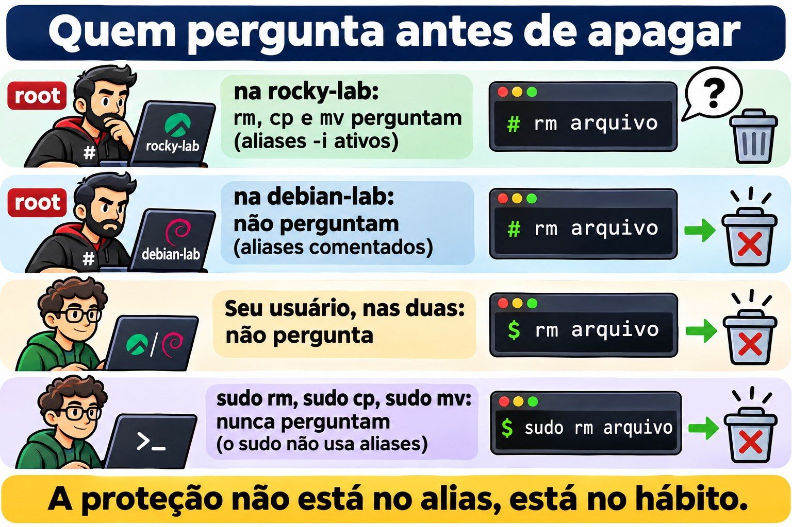
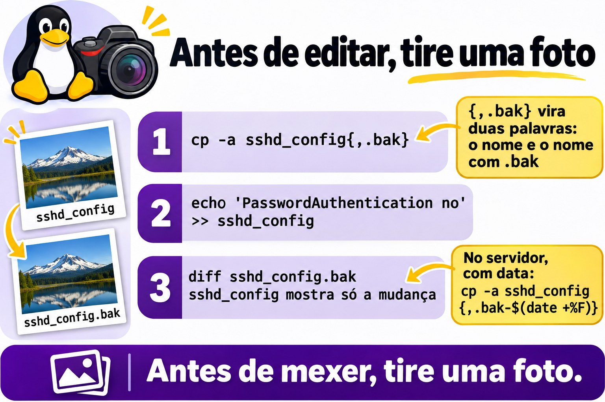
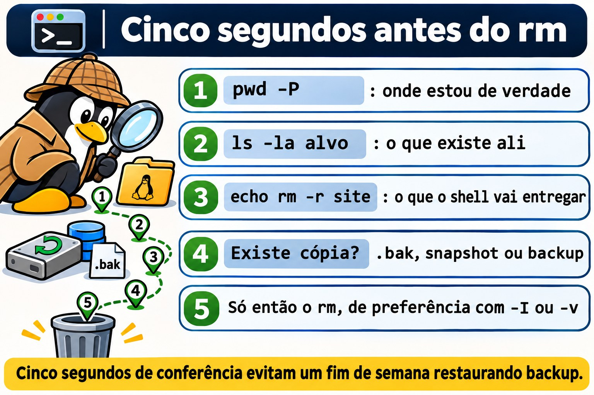

Aula 1.4 · Criar, copiar, mover e apagar
Você aprende a criar, copiar, mover e apagar arquivos e diretórios sem perder o que importa. O caminho não é decorar opções. É entender o que cada comando faz por dentro e criar três hábitos: copiar antes de mexer, conferir antes de apagar e desconfiar de comando que não pergunta nada.
| Ficha | Aula 1.4 |
|---|---|
| Módulo | M1 · Linha de comando, aula 4 de 10 |
| Quando | Semana 2 |
| Ao final você consegue | Criar uma árvore de diretórios num comando; fazer a cópia de segurança de uma configuração antes de editá-la; copiar diretórios preservando dono, permissões e datas; renomear e mover sem substituir nada por engano; apagar sabendo exatamente o que vai sumir; explicar por que não há lixeira e por que o disco às vezes continua cheio depois do rm |
| Pré-requisitos | Aula 1.3, com o ~/lab13 ainda nas VMs |
| Tempo | Cerca de 2h30 |
| Snapshots | m1a4-inicio e m1a4-fim nas duas VMs |
1 · Aquecimento
Três perguntas, de cabeça, antes de ler qualquer coisa. Escreva as respostas; o Gabarito confere no fim.
- Num diretório com
app1.log,app2.logeapp10.log, o queecho app?.logmostra? - Um arquivo se chama
-rf. Por querm "-rf"não o apaga, e qual comando apaga? - O seu prompt diz
/srv/app/current, mas a edição que você fez não pegou. Qual comando mostra onde você está de verdade?
2 · Por que importa
Sexta, 18h. Um colega precisa liberar espaço no servidor de arquivos de um cliente e digita rm -rf /srv/arquivos/ antigo, com um espaço a mais depois da barra. O shell entrega dois alvos ao rm: o /srv/arquivos/ inteiro e um antigo que nem existe ali. O -f cala o único aviso que haveria. Não aparece pergunta, nem mensagem, nem lixeira. O fim de semana vira restauração de backup, se houver backup.
O segundo caso é mais comum e mais discreto. Alguém restaura uma pasta do backup com sudo cp -r. Os arquivos voltam, mas com o root como dono e a data de hoje. O sistema que usava a pasta para de gravar nela, e ninguém liga uma coisa à outra até segunda-feira.
O terceiro acontece toda semana em algum lugar: um mv para a pasta compartilhada substitui, sem perguntar, um arquivo de mesmo nome que era de outra pessoa. No terminal, cp, mv e rm fazem exatamente o que você digitou, sem pedir confirmação. Esta aula mostra o que cada um faz por dentro e os hábitos de poucos segundos que deixam você mexer em servidor de cliente sem medo.
3 · Modelo mental
Um diretório é a lista de moradores na portaria do prédio da Aula 1.3. Cada nome da lista aponta para um apartamento, e é no apartamento que o conteúdo mora.
mvtroca o nome na lista. Renomear, ou passar o nome para a lista de outro andar, não muda ninguém de apartamento. Por isso é instantâneo dentro do mesmo prédio, que no Linux é o mesmo sistema de arquivos. Para outro prédio, ou seja, outro disco, aí é mudança de verdade: copiar tudo e esvaziar o apartamento antigo.cpmobilia um apartamento novo igual ao antigo. O dono passa a ser quem copiou e a data é a de hoje, a não ser que você peça-a, que copia também o dono, a data e as permissões.rmrisca o nome da lista. Quando nenhum nome aponta mais para o apartamento e ninguém está lá dentro, ou seja, nenhum programa está com o arquivo aberto, o espaço fica livre. Não há lixeira: a portaria não guarda a lista riscada.- Ninguém pergunta “tem certeza?”. Por padrão,
cpemvsubstituem calados um nome que já existe no destino, ermapaga sem confirmar.
Dessa planta saem três consequências:
- Antes de mexer numa configuração, copie. O
cp -acom a expansão de chaves faz isso em um segundo. - Antes de apagar, veja a lista: o protocolo da Aula 1.3, com
pwd -P,ls -laeecho. - Apagar não libera espaço enquanto um programa ainda usa o arquivo. É por isso que o disco às vezes continua cheio depois do
rm.
O mesmo prédio, desenhado:
lista do diretório nº do apartamento conteúdo no disco
notas.txt ───────→ 33711452 ───────→ [ bytes do arquivo ]
mv notas.txt anotacoes.txt o nome muda; o nº continua 33711452
cp notas.txt copia.txt nome novo, nº novo, bytes duplicados
rm notas.txt o nome sai da lista; os bytes ficam livres
quando nenhum nome e nenhum programa os usaO número do apartamento existe de verdade: chama-se inode, e o ls -i mostra. Você vai vê-lo no Passo 3.
Ponte Windows. No Explorer, apagar manda para a Lixeira, e substituir um arquivo abre uma janela de confirmação. No terminal do Linux não existe nenhuma das duas coisas. E um comando faz o trabalho de dois: o mv é o move e o ren do cmd.exe ao mesmo tempo.

4 · Conceito em camadas
Essencial
| Termo | O que é | Exemplo |
|---|---|---|
mkdir -p | Cria o diretório e os pais que faltarem; não reclama se já existe | mkdir -p ~/lab14/a/b/c |
touch | Cria um arquivo vazio; se ele já existe, só atualiza a data | touch index.html |
cp | Copia arquivos; a cópia ganha dono e data novos | cp notas.txt /tmp/ |
cp -r | Copia um diretório e tudo o que tem dentro | cp -r site site-copia |
cp -a | Cópia de arquivo morto: recursiva, preservando dono, permissões, datas e atalhos | cp -a /etc/ssh ~/ssh-bak |
mv | Renomeia ou move; no mesmo sistema de arquivos, só troca o nome | mv velho.txt novo.txt |
rm | Apaga arquivos; diretório, só com -r | rm erro.log |
rmdir | Apaga só diretório vazio | rmdir img |
-i | Pergunta antes de cada substituição ou remoção | mv -i a.txt pasta/ |
-I | No rm: pergunta uma vez só, antes de apagar muito | rm -rI copia |
-v | Mostra cada item criado, copiado, movido ou apagado | rm -v *.tmp |
-f | Força: não pergunta e não avisa se o alvo não existe | rm -f cache.tmp |
| Inode | O número do apartamento: onde o conteúdo de fato está | ls -i |
Três formas de cópia que você vai usar a vida toda:
cp -a sshd_config sshd_config.bak: a cópia de segurança antes de editar. Com chaves,cp -a sshd_config{,.bak}.cp -a origem destino: a cópia que preserva tudo, para backup e restauração.cp -a origem/. destino/: copia o conteúdo para dentro do destino e dá o mesmo resultado na primeira e na décima vez.
Ponte Windows
| No Windows | No Linux |
|---|---|
md, que já cria os pais | mkdir -p |
copy | cp |
xcopy /e ou robocopy /e | cp -r |
robocopy /copyall | cp -a |
move e ren | mv, para as duas coisas |
del | rm |
rd /s | rm -r |
rd | rmdir |
| Lixeira | Não existe no terminal: backup, snapshot e .bak |
| Janela “Substituir arquivo?” | Não existe por padrão; -i pergunta |
Aprofundamento
Apagar é desvincular. O rm tira o nome da lista; quem libera o espaço é o sistema, quando nenhum nome e nenhum programa usam mais o conteúdo. Ferramentas de recuperação existem, mas no XFS e no ext4 elas raramente salvam o dia. O que salva é backup, snapshot e a cópia .bak que você fez antes.
O cp cria, o mv renomeia. Por isso o mv preserva tudo, até a etiqueta do SELinux, e o cp não. Entre sistemas de arquivos diferentes, o mv vira cópia seguida de remoção: demora e precisa de espaço livre no destino.
O que o -a guarda. O cp -a equivale a -dR --preserve=all: entra nos diretórios, copia atalhos como atalhos e preserva dono, grupo, permissões, datas, etiquetas do SELinux e atributos estendidos. Como usuário comum, você não consegue dar arquivos a outra pessoa, então o dono da cópia é você. Só o root preserva o dono original.
A cópia muda conforme o destino existe. cp -r a b cria b como cópia de a se b não existe. Se b já existe, cria b/a. O mesmo comando, rodado duas vezes, dá resultados diferentes. cp -a a/. b/ sempre copia o conteúdo de a para dentro de b.
O -f cala. No rm, o -f tira as perguntas e também a mensagem de alvo inexistente. E a última opção vale: rm -f desliga um alias rm -i. Quem digita rm -rf por costume nunca vê a pergunta que o alias faria.
O -I é melhor que o -i. O -i pergunta arquivo por arquivo, e depois do vigésimo y ninguém lê mais nada. O -I pergunta uma vez, quando a remoção é recursiva ou tem mais de três arquivos.
Uma quase lixeira. cp e mv aceitam --backup=numbered: antes de substituir, guardam o arquivo antigo como nome.~1~, nome.~2~ e assim por diante.
rm -rf / é recusado; rm -rf /* não. A proteção padrão, --preserve-root, só reconhece a raiz escrita sozinha. O /* é expandido pelo shell em /bin, /boot, /etc e o resto, e cada um vira um argumento comum. É por isso que uma variável vazia num script é perigosa, como você vê no Passo 7.
5 · Rocky × Debian
Os comandos são os mesmos, do pacote coreutils. O que muda é o que está em volta deles, e isso decide se o comando pergunta antes ou apaga calado:
| rocky-lab | debian-lab | |
|---|---|---|
| Aliases do root | rm -i, cp -i e mv -i ativos no /root/.bashrc: como root, os três perguntam | As mesmas linhas existem no /root/.bashrc, comentadas: não perguntam |
| O seu usuário | Sem esses aliases: não pergunta | Igual |
sudo rm, sudo cp, sudo mv | O sudo não usa aliases: nunca perguntam | Igual |
| Versão do coreutils | 8.32 | 9.x: algumas mensagens mudam uma palavra ou outra |
| Sistema de arquivos da instalação | XFS | ext4 |
mv do home para o /tmp | Instantâneo se os dois estão no mesmo sistema de arquivos | Sempre cópia e remoção, porque o /tmp está na memória |
| Etiqueta do SELinux | O mv leva a etiqueta; o cp ganha a do destino. Pode quebrar um serviço. | Sem SELinux: a diferença não existe |


6 · Lab guiado
Abra três terminais: um na rocky-lab, um na debian-lab e um no nó Proxmox, para os snapshots. Em cada passo, rode, compare com a saída e só então leia o Decida. As saídas são trechos: números, datas e nomes vão ser outros na sua tela.
Cada Decida é um caso real de trabalho. Escolha a letra antes de olhar a tabela: errar aqui, com a explicação ao lado, é o jeito mais barato de errar.
Passo 1 · Snapshot antes de tudo. As VMs devem estar no estado m1a3-fim, com o ~/lab13 ainda lá. No nó Proxmox onde cada VM roda:
qm snapshot 201 m1a4-inicio
qm snapshot 202 m1a4-inicio
qm listsnapshot 201Saída esperada: a lista termina em m1a3-fim, m1a4-inicio e current. Nas duas VMs, confira que a 1.3 deixou o material:
ls -A ~/lab13/logsPasso 2 · Criar a árvore inteira de uma vez. Nas duas VMs:
mkdir ~/lab14
cd ~/lab14
mkdir site/cssAlgo como:
mkdir: cannot create directory 'site/css': No such file or directoryO mkdir cria um nível só. O pai site não existe, então ele recusa. Agora com -p, e com -v para ver cada passo:
mkdir -pv site/{css,js,img}
echo site/{css,js,img}
mkdir -p site/css
mkdir siteAlgo como:
mkdir: created directory 'site'
mkdir: created directory 'site/css'
mkdir: created directory 'site/js'
mkdir: created directory 'site/img'
site/css site/js site/img
mkdir: cannot create directory 'site': File existsTrês coisas para ver aí. As chaves não são do mkdir: o shell as expande antes, e o echo mostra o que ele entregou, como os curingas da 1.3. O mkdir -p site/css repetido não diz nada, porque já existe e está tudo certo. O mkdir site sem -p reclama.
Decida 1 · O deploy que falha no servidor novo. Cenário: o script de deploy roda mkdir /srv/app/releases/$(date +%F) toda noite. Num servidor recém-instalado, ele falha com No such file or directory. O que você faz?
- A) Troca por
mkdir -pno script. - B) Passa a rodar o script com
sudo. - C) Acrescenta
2>/dev/nullno fim da linha para sumir com o erro. - D) Cria
/srv/app/releasesà mão nesse servidor e segue.
Escolha a letra antes de olhar a tabela.
| Se você marcou | Resultado | Por quê |
|---|---|---|
| A | ✅ Certa | O -p cria os pais que faltam e não falha se já existem. O script passa a funcionar em servidor novo e velho, na primeira e na centésima noite. |
| B | ❌ Errada | Falta de permissão diria Permission denied. O erro aqui é pai inexistente, e o root também não cria dois níveis sem -p. |
| C | ❌ Errada | Esconde o erro e o deploy segue sem o diretório. A falha aparece mais adiante, longe da causa. |
| D | ❌ Errada | Resolve hoje e falha no próximo servidor novo. A correção pertence ao script. |
Para fixar: -p quer dizer "faça o caminho todo e não reclame do que já existe".
Passo 3 · O número do apartamento. Primeiro o touch, nas duas VMs:
touch site/index.html site/css/style.css
ls -l --time-style=+%T site/index.htmlEspere uns dez segundos e repita os dois comandos. O tamanho continua zero, só a hora muda. O touch num arquivo que já existe não apaga nada: só atualiza a data. Agora o inode, o número do apartamento do Modelo mental:
echo "primeira linha" > notas.txt
ls -i notas.txt
mv notas.txt anotacoes.txt
ls -i anotacoes.txt
cp anotacoes.txt copia.txt
ls -i anotacoes.txt copia.txtAlgo como:
33711452 notas.txt
33711452 anotacoes.txt
33711452 anotacoes.txt 33711460 copia.txtO mv não mudou o número, só o nome na lista. A cópia ganhou um apartamento novo, com número próprio.
Decida 2 · O log de 40 GB. Cenário: o app.log tem 40 GB, o disco está com 2 GB livres e você quer guardar o arquivo atual como app.log.1, no mesmo diretório, com mv app.log app.log.1. O app continua rodando. O que acontece?
- A) O
mvé instantâneo e não ocupa espaço, mas o app continua gravando no arquivo que agora se chamaapp.log.1. - B) O
mvfalha por falta de espaço, porque precisa copiar os 40 GB. - C) O
mvé instantâneo, e o app passa a gravar numapp.lognovo automaticamente. - D) O
mvdemora alguns minutos, proporcional ao tamanho.
Escolha a letra antes de olhar a tabela.
| Se você marcou | Resultado | Por quê |
|---|---|---|
| A | ✅ Certa | No mesmo sistema de arquivos, o mv só troca o nome na lista. O app abriu o arquivo antes e segura o apartamento, não o nome: continua gravando lá. É por isso que o logrotate avisa o serviço depois de renomear. |
| B | ❌ Errada | Isso seria o cp, ou um mv para outro disco. No mesmo disco não há cópia. |
| C | ❌ Errada | Ninguém cria o app.log novo. O app só passa a usar outro arquivo quando reabre o log, depois de um reload ou restart. |
| D | ❌ Errada | O tempo proporcional ao tamanho só aparece entre sistemas de arquivos diferentes. |
Para fixar: mv no mesmo disco é trocar a plaquinha da porta. Quem está lá dentro nem percebe.
Passo 4 · A cópia antes de editar. Uma configuração de mentira, nas duas VMs:
printf 'Port 22\nPermitRootLogin no\n' > sshd_config
echo cp -a sshd_config{,.bak}
cp -a sshd_config{,.bak}
ls -l sshd_config*Algo como:
cp -a sshd_config sshd_config.bak
-rw-r--r--. 1 student student 32 Nov 2 10:12 sshd_config
-rw-r--r--. 1 student student 32 Nov 2 10:12 sshd_config.bakO {,.bak} vira duas palavras: o nome sem nada e o nome com .bak. Agora edite e compare:
echo 'PasswordAuthentication no' >> sshd_config
diff sshd_config.bak sshd_config
cp -a sshd_config{,.bak-$(date +%F)}
ls sshd_config*Algo como:
2a3
> PasswordAuthentication no
sshd_config sshd_config.bak sshd_config.bak-2026-11-02O diff mostra exatamente o que você mudou. Com a data no nome, o .bak de hoje não substitui o de ontem. No servidor de verdade é o mesmo comando, com sudo e o caminho completo: sudo cp -a /etc/ssh/sshd_config{,.bak-$(date +%F)}.
Decida 3 · Antes de mexer no SSH do cliente. Cenário: você vai desligar o login por senha no SSH de um servidor de cliente. Qual é o primeiro comando?
- A)
sudo cp -a /etc/ssh/sshd_config{,.bak-$(date +%F)} - B)
sudo cp /etc/ssh/sshd_config /tmp/ - C)
sudo vi /etc/ssh/sshd_config, com cuidado. - D)
sudo mv /etc/ssh/sshd_config{,.bak}e escrever um arquivo novo.
Escolha a letra antes de olhar a tabela.
| Se você marcou | Resultado | Por quê |
|---|---|---|
| A | ✅ Certa | Cópia ao lado do original, com dono, permissões e etiqueta preservados, e com data. Se o sshd não subir, a volta é um cp. |
| B | ❌ Errada | O /tmp é limpo no reboot, e na Debian 13 ele fica na memória. O backup some justamente quando você mais precisa dele. |
| C | ❌ Errada | Cuidado não é caminho de volta. Se o sshd não subir, você pode perder o acesso sem saber o que estava antes. |
| D | ❌ Errada | Por um instante o arquivo não existe. E o novo nasce sem o conteúdo, a etiqueta e as permissões do original. |
Para fixar: antes de mexer, tire uma foto. A foto é o .bak com data, ao lado do original.


Passo 5 · Quem vira dono da cópia. Quatro cópias do mesmo arquivo do root, nas duas VMs:
cp /etc/hosts hosts-cp
cp -a /etc/hosts hosts-a
sudo cp /etc/hosts hosts-sudo
sudo cp -a /etc/hosts hosts-sudo-a
ls -l /etc/hosts hosts-*Algo como:
-rw-r--r--. 1 root root 158 Jun 23 2020 /etc/hosts
-rw-r--r--. 1 student student 158 Jun 23 2020 hosts-a
-rw-r--r--. 1 student student 158 Nov 2 10:15 hosts-cp
-rw-r--r--. 1 root root 158 Nov 2 10:15 hosts-sudo
-rw-r--r--. 1 root root 158 Jun 23 2020 hosts-sudo-aLeia linha por linha:
| Comando | Dono da cópia | Data da cópia |
|---|---|---|
cp | Você | Agora |
cp -a, como você | Você, porque usuário comum não entrega arquivo a outra pessoa | A original |
sudo cp | root | Agora |
sudo cp -a | O dono original | A original: cópia fiel |
Regra: o dono da cópia é quem roda o cp, a não ser que seja o root com -a.
Decida 4 · A restauração de sexta-feira. Cenário: a pasta /srv/dados/app, do usuário app, foi apagada. O backup está em /backup/app, feito com cp -a. Como restaurar?
- A)
sudo cp -a /backup/app /srv/dados/ - B)
sudo cp -r /backup/app /srv/dados/ - C)
cp -a /backup/app /srv/dados/, como seu usuário. - D)
sudo mv /backup/app /srv/dados/
Escolha a letra antes de olhar a tabela.
| Se você marcou | Resultado | Por quê |
|---|---|---|
| A | ✅ Certa | O root com -a devolve dono, permissões, datas e etiquetas como eram. E o backup continua lá. |
| B | ❌ Errada | Os arquivos voltam com dono root e data de hoje. O serviço, que roda como app, não consegue mais gravar. Você vai provocar isso na Quebra A. |
| C | ❌ Errada | Sem root você não entrega os arquivos ao usuário app, e provavelmente nem grava em /srv/dados. |
| D | ❌ Errada | Restaura e some com o backup. Se algo der errado, não tem segunda tentativa. E se /backup for outro disco, o mv copia tudo e apaga a origem. |
Para fixar: restaurar é cp -a como root. O backup fica onde está.
Passo 6 · Copiar diretórios. Rode a mesma cópia duas vezes, nas duas VMs:
cp -r site site-copia
ls site-copia
cp -r site site-copia
ls site-copiaAlgo como:
css img index.html js
css img index.html js siteNa segunda vez, site-copia já existia, então o cp criou site-copia/site. Num backup noturno isso vira uma boneca russa. Agora do jeito que dá sempre o mesmo resultado:
rm -r site-copia
cp -a site/. site-bak
cp -a site/. site-bak
ls site-bakAs duas vezes dão css img index.html js. O site/. quer dizer "o que está dentro de site". Agora os ocultos, com os arquivos da 1.3:
mkdir dest-estrela dest-ponto
cp -a ~/lab13/logs/* dest-estrela/
cp -a ~/lab13/logs/. dest-ponto/
ls -A dest-estrela
ls -A dest-pontoO .escondido.log aparece só em dest-ponto. O * não pega ocultos, como você viu na 1.3. O /. pega tudo. Se aparecerem outros nomes, sobras da 1.3, tudo bem: o que importa é a diferença.
Decida 5 · A home da Ana no disco novo. Cenário: você vai mover /home/ana para um disco novo montado em /mnt/novo. Qual comando?
- A)
sudo cp -a /home/ana/. /mnt/novo/ana/ - B)
sudo cp -a /home/ana/* /mnt/novo/ana/ - C)
sudo cp -r /home/ana /mnt/novo/ - D)
sudo mv /home/ana /mnt/novo/
Escolha a letra antes de olhar a tabela.
| Se você marcou | Resultado | Por quê |
|---|---|---|
| A | ✅ Certa | Copia todo o conteúdo, ocultos incluídos, com dono, permissões e datas. O original fica intacto até você conferir. |
| B | ❌ Errada | O * deixa para trás .ssh, .bashrc e .config. A Ana entra e não tem chaves nem configuração. |
| C | ❌ Errada | Leva os ocultos, mas tudo vira do root e perde as datas. O sshd recusa chaves numa .ssh com dono errado. |
| D | ❌ Errada | Entre discos, o mv copia e apaga. Se cair no meio, você fica com metade de cada lado e sem o original. |
Para fixar: diretório inteiro é origem/. com cp -a.

Passo 7 · O mv que substitui calado. Um caso de pasta compartilhada, nas duas VMs:
mkdir compartilhada
echo "versão da Maria" > compartilhada/relatorio.txt
echo "versão do João" > relatorio.txt
mv relatorio.txt compartilhada/
cat compartilhada/relatorio.txtSaída: versão do João. A versão da Maria sumiu, sem pergunta e sem lixeira. Refaça a cena e tente as duas proteções:
echo "versão da Maria" > compartilhada/relatorio.txt
echo "versão do João" > relatorio.txt
mv -i relatorio.txt compartilhada/Algo como mv: overwrite 'compartilhada/relatorio.txt'?. Responda n e o arquivo do João continua onde estava. Agora a quase lixeira:
mv --backup=numbered relatorio.txt compartilhada/
ls compartilhada/
cat compartilhada/relatorio.txt.~1~Algo como relatorio.txt relatorio.txt.~1~, e o cat mostra versão da Maria. O arquivo antigo foi guardado com número, em vez de sumir.
Decida 6 · O relatório na pasta do financeiro. Cenário: você entrega o relatório do mês em /srv/financeiro, onde três colegas também gravam. Qual comando?
- A)
mv relatorio.pdf /srv/financeiro/ - B)
mv -i relatorio.pdf /srv/financeiro/ - C)
cp relatorio.pdf /srv/financeiro/, para não perder o seu. - D)
mv -f relatorio.pdf /srv/financeiro/
Escolha a letra antes de olhar a tabela.
| Se você marcou | Resultado | Por quê |
|---|---|---|
| A | ❌ Errada | Se um colega já gravou um relatorio.pdf, o dele some calado. |
| B | ✅ Certa | Se o nome já existe, o mv pergunta antes. Você renomeia o seu e ninguém perde nada. Num script, use --backup=numbered. |
| C | ❌ Errada | O seu fica a salvo, mas o cp também substitui calado o do colega. |
| D | ❌ Errada | O -f existe justamente para não perguntar nada. |
Para fixar: em pasta dos outros, -i na mão e --backup=numbered no script.
Passo 8 · Apagar sabendo o que vai sumir. Primeiro os limites do rmdir e do rm, nas duas VMs:
mkdir vazio
rmdir vazio
rmdir site-bak
rm site-bak
rm -rIv site-bakAlgo como:
rmdir: failed to remove 'site-bak': Directory not empty
rm: cannot remove 'site-bak': Is a directory
rm: remove 1 argument recursively? y
removed 'site-bak/index.html'
...
removed directory 'site-bak'O rmdir só apaga diretório vazio, o rm sem -r não apaga diretório, e o -I pergunta uma vez só. Agora veja o que o shell entrega ao rm quando sobra um espaço, sem apagar nada:
printf '[%s]\n' rm -rf ~/lab14/ site-copiaAlgo como:
[rm]
[-rf]
[/home/student/lab14/]
[site-copia]São quatro argumentos. O rm apagaria o lab14 inteiro. O printf '[%s]\n' põe cada argumento entre colchetes, e é o raio X de qualquer comando perigoso. Por fim, o pior caso dos scripts, também só com echo:
ALVO=""
echo rm -rf "$ALVO"/*
echo rm -rf "${ALVO:?está vazia}"/*Algo como:
rm -rf /afs /bin /boot /dev /etc /home /lib /lib64 /media /mnt /opt /proc /root /run /sbin /srv /sys /tmp /usr /var
bash: ALVO: está vaziaCom a variável vazia, "$ALVO"/* virou /*: a raiz inteira, item por item, e o --preserve-root não reconhece. Você só viu porque usou echo. O ${ALVO:?mensagem} faz o bash parar ali quando a variável está vazia ou não existe. Agora com a variável preenchida, de verdade:
ALVO=~/lab14/dest-estrela
echo rm -rf "${ALVO:?está vazia}"/*
rm -rf "${ALVO:?está vazia}"/*
ls -A "$ALVO"O echo mostra só arquivos dentro de dest-estrela. O rm apaga, e o ls -A não mostra nada.
Decida 7 · A limpeza do cron. Cenário: o script de limpeza de um cliente tem a linha rm -rf $TMPDIR_APP/* e roda como root toda noite. Qual correção você faz?
- A)
rm -rf "$TMPDIR_APP"/* - B)
rm -rf "${TMPDIR_APP:?}"/* - C)
rm -ri $TMPDIR_APP/* - D) Nenhuma: o script funciona há anos.
Escolha a letra antes de olhar a tabela.
| Se você marcou | Resultado | Por quê |
|---|---|---|
| A | ❌ Errada | As aspas protegem caminhos com espaço, mas com a variável vazia o resultado continua sendo /*. |
| B | ✅ Certa | As aspas protegem os espaços e o :? aborta o script se a variável vier vazia. Uma linha, dois desastres evitados. |
| C | ❌ Errada | No cron ninguém responde pergunta. E com a variável vazia continua sendo /*. |
| D | ❌ Errada | Funciona até o dia em que alguém comenta a linha que define a variável. Nesse dia, apaga o servidor. |
Para fixar: variável num rm vai sempre entre aspas e com :?.
Decida 8 · O conselho do colega. Cenário: como root, na rocky-lab, o rm arquivo pergunta remove regular file?. Na debian-lab não pergunta. Um colega diz: "usa sempre rm -rf, aí ele para de encher". O que você responde?
- A) "Boa, o
-fé o jeito profissional." - B) "Na Rocky o root tem o alias
rm -i, e o-fo desliga. Prefiro conferir comechoe usar-Iquando é muita coisa." - C) "Põe
alias rm='rm -i'em todo servidor e pode usar-rftranquilo." - D) "A Debian está mal configurada; precisa corrigir."
Escolha a letra antes de olhar a tabela.
| Se você marcou | Resultado | Por quê |
|---|---|---|
| A | ❌ Errada | O -f cala a pergunta e também o aviso de alvo inexistente. Você perde as duas pistas de que digitou errado. |
| B | ✅ Certa | A pergunta vem do alias no /root/.bashrc. Um -f depois dele vence. A proteção que vale em qualquer servidor é o hábito: ver antes, apagar depois. |
| C | ❌ Errada | O -f vence o alias, e o sudo nem usa aliases. A rede de proteção não protege nada. |
| D | ❌ Errada | É escolha de configuração: na Debian as mesmas linhas estão comentadas no /root/.bashrc. |
Para fixar: a proteção não está no alias, está no hábito.
Protocolo antes de apagar ou substituir. Os cinco segundos que separam um sysadmin tranquilo de um fim de semana restaurando backup:
pwd -P
ls -la site
echo rm -r sitepwd -P: onde estou de verdade.ls -la alvo: o que existe ali.echoouprintf '[%s]\n'na frente do comando: o que o shell vai entregar.- Existe cópia? Um
.bak, um snapshot ou um backup. - Só então o
rm, de preferência com-Iou-v.


7 · Quebre e conserte
Duas panes que você vai encontrar em cliente. Em cada uma: quebre, preveja antes de olhar, descubra com os comandos, decida, conserte e verifique. Faça primeiro na rocky-lab; a Debian entra no bônus. As duas ficam dentro do ~/lab14, então não há risco fora dele.
Quebra A · Restaurei e o app parou de gravar
O caso da Decida 4, em miniatura. O ~/lab14/app/dados faz o papel da pasta de um serviço que roda com o seu usuário.
Prepare.
mkdir -p ~/lab14/app/dados ~/lab14/backup
echo "registro 1" > ~/lab14/app/dados/registro.log
cp -a ~/lab14/app/dados ~/lab14/backup/
ls -l ~/lab14/backup/dadosQuebre. O desastre e a restauração apressada:
rm -rf ~/lab14/app/dados
sudo cp -r ~/lab14/backup/dados ~/lab14/app/Preveja. O "serviço" vai gravar uma linha nova no registro.log. Vai funcionar? Escreva sim ou não, e por quê, antes de rodar o próximo bloco.
Descubra.
echo "registro 2" >> ~/lab14/app/dados/registro.log
ls -l ~/lab14/app/dados ~/lab14/backup/dadosAlgo como:
bash: /home/student/lab14/app/dados/registro.log: Permission denied
/home/student/lab14/app/dados:
-rw-r--r--. 1 root root 11 Nov 2 10:40 registro.log
/home/student/lab14/backup/dados:
-rw-r--r--. 1 student student 11 Nov 2 10:31 registro.logO conteúdo voltou, mas o dono virou root e a data é a da restauração. O arquivo pode ser lido por todos e gravado só pelo dono, que agora é o root. O backup, feito com cp -a, estava certo; quem estragou foi a restauração.
Decida. Como consertar?
- A)
sudo rm -rf ~/lab14/app/dadose depoiscp -a ~/lab14/backup/dados ~/lab14/app/ - B)
sudo chmod -R 777 ~/lab14/app/dados - C) Passar a rodar o serviço como root.
- D)
sudo chown -R student: ~/lab14/app/dados
Escolha a letra antes de olhar a tabela.
| Se você marcou | Resultado | Por quê |
|---|---|---|
| A | ✅ Certa | Refaz a restauração do jeito certo: dono, permissões e datas voltam do backup. Aqui o cp -a nem precisa de sudo, porque os arquivos do backup já são seus. |
| B | ❌ Errada | "Funciona", mas deixa qualquer usuário gravar na pasta e o dono continua errado. É o remendo mais comum em produção, e o mais perigoso. |
| C | ❌ Errada | Resolve o sintoma criando um problema de segurança: qualquer falha do serviço vira falha de root. |
| D | ❌ Incompleta | Conserta o dono, mas as datas continuam erradas. E numa árvore com donos diferentes você teria que saber o dono de cada arquivo. O chown tem aula própria, a 2.7. |
Conserte. Protocolo primeiro, depois a restauração certa:
ls -la ~/lab14/app/dados
sudo rm -rf ~/lab14/app/dados
cp -a ~/lab14/backup/dados ~/lab14/app/Verifique.
ls -l ~/lab14/app/dados
echo "registro 2" >> ~/lab14/app/dados/registro.log
cat ~/lab14/app/dados/registro.logO ls mostra você como dono e a hora do backup, não a da restauração. O cat mostra registro 1 e registro 2.
Quebra B · Apaguei e o disco não liberou
O /var de um cliente chega a 100%. Alguém apaga o log gigante e o df não se mexe. Você vai montar a cena com um arquivo de 300 MB e um processo que o mantém aberto.
Quebre.
cd ~/lab14
dd if=/dev/zero of=grande.bin bs=1M count=300 status=none
df -h ~
sleep 3600 < grande.bin &
rm grande.bin
ls grande.binO sleep recebe o arquivo como entrada e fica uma hora parado, com ele aberto. É o papel do serviço que escreve o log. O ls responde No such file or directory: para a lista do diretório, o arquivo não existe mais.
Preveja. O próximo df -h ~ mostra os 300 MB de volta? Anote o número que você espera na coluna Avail.
Descubra.
df -h ~
ls -l /proc/$!/fd
sudo lsof +L1Algo como:
Filesystem Size Used Avail Use% Mounted on
/dev/mapper/rl-root 17G 2.9G 15G 17% /
lr-x------. 1 student student 64 Nov 2 10:52 0 -> /home/student/lab14/grande.bin (deleted)
COMMAND PID USER FD TYPE DEVICE SIZE/OFF NLINK NODE NAME
sleep 4242 student 0r REG 253,0 314572800 0 33711470 /home/student/lab14/grande.bin (deleted)O Avail não mudou. O $! é o número do último processo que você mandou para o fundo, o sleep, e o (deleted) é a prova: o nome foi riscado, mas o apartamento continua ocupado. No servidor você não sabe qual é o processo, então usa o lsof +L1, que lista arquivos abertos que já não têm nome nenhum (NLINK 0). Se o lsof não estiver instalado no lab: sudo dnf install -y lsof na Rocky, sudo apt install -y lsof na Debian.
Decida. No servidor do cliente, o /var continua em 100% depois de você apagar um log de 20 GB. O que você faz?
- A) Descobre quem segura o arquivo com
sudo lsof +L1e reinicia só aquele serviço. - B) Reinicia o servidor.
- C) Apaga mais arquivos até o
dfbaixar. - D) Roda
fsckno/var.
Escolha a letra antes de olhar a tabela.
| Se você marcou | Resultado | Por quê |
|---|---|---|
| A | ✅ Certa | O espaço volta quando o último programa fecha o arquivo. Reiniciar ou recarregar o serviço certo resolve em segundos, sem derrubar o resto. |
| B | ❌ Errada | Funciona, mas derruba tudo por causa de um processo, e você continua sem saber a causa. |
| C | ❌ Errada | Você apaga coisa útil e o espaço do primeiro continua preso. |
| D | ❌ Errada | Não há corrupção: o sistema está fazendo exatamente o que deve. E fsck num sistema montado é pedir problema. |
Da próxima vez, num log aberto, não apague: esvazie. O truncate -s 0 arquivo zera o conteúdo e o espaço volta na hora, com o serviço rodando. Na Aula 1.6 você vê o atalho > arquivo.
Conserte.
kill $!
df -h ~Se você trocou de terminal no meio, o $! não existe mais lá. Use o PID que o lsof mostrou: kill 4242, com o seu número.
Verifique. O Avail subiu uns 300 MB, o jobs não mostra nada e o sudo lsof +L1 não lista mais o grande.bin.
E o snapshot?
O m1a4-inicio salva a VM inteira. Voltar a ele desfaz tudo o que veio depois, não só o arquivo que você queria. Ele é a rede de proteção da aula, não a ferramenta do dia a dia. No dia a dia, quem devolve um arquivo é o .bak ao lado do original e o backup. Repare na Quebra A: o conserto veio do backup, em segundos, sem tocar no resto da máquina.
Bônus na Debian
Repita as duas Quebras na debian-lab: o resultado é o mesmo, porque os comandos são os mesmos. Depois veja o mv que vira cópia:
findmnt -T ~
findmnt -T /tmp
dd if=/dev/zero of=~/lab14/medio.bin bs=1M count=200 status=none
time mv ~/lab14/medio.bin ~/lab14/medio2.bin
time mv ~/lab14/medio2.bin /tmp/
rm /tmp/medio2.binNo primeiro mv, o tempo é praticamente zero. No segundo, se o findmnt mostrou o /tmp como tmpfs, o mv copia os 200 MB para a memória e apaga a origem, e você vê o tempo subir. Se os dois estiverem no mesmo sistema de arquivos, os tempos ficam parecidos. A lição é a mesma: o findmnt -T diz, antes, se o mv vai ser instantâneo.
Bônus na Rocky · A etiqueta que o mv leva junto
Só na rocky-lab, que tem SELinux:
touch ~/lab14/etq.txt
ls -Z ~/lab14/etq.txt
sudo cp ~/lab14/etq.txt /etc/etq-cp.txt
sudo mv ~/lab14/etq.txt /etc/etq-mv.txt
ls -Z /etc/etq-cp.txt /etc/etq-mv.txt
sudo restorecon -v /etc/etq-mv.txt
sudo rm -v /etc/etq-cp.txt /etc/etq-mv.txtAlgo como:
unconfined_u:object_r:user_home_t:s0 /home/student/lab14/etq.txt
unconfined_u:object_r:etc_t:s0 /etc/etq-cp.txt
unconfined_u:object_r:user_home_t:s0 /etc/etq-mv.txt
Relabeled /etc/etq-mv.txt from unconfined_u:object_r:user_home_t:s0 to unconfined_u:object_r:etc_t:s0
removed '/etc/etq-cp.txt'
removed '/etc/etq-mv.txt'A cópia ganhou a etiqueta do lugar novo, etc_t. O arquivo movido continua com a etiqueta de coisa da home, user_home_t. Num servidor web, esse é o caso clássico: o arquivo está em /var/www/html, as permissões estão certas e o Apache responde 403. O restorecon aplica a etiqueta certa para o lugar. Você vai ver isso a fundo na aula de SELinux.
A lição
- O
cpcria: dono, data e etiqueta novos, a não ser que você peça-a. - O
mvrenomeia: leva tudo junto, até a etiqueta. - O
rmdesvincula: o espaço só volta quando nenhum nome e nenhum programa usam mais o arquivo. - Restaurar é
cp -acomo root, e o backup não sai do lugar.
8 · Armadilhas
| Armadilha | O que acontece | Como evitar |
|---|---|---|
cp -r para backup ou restauração | Dono e data viram os de quem copiou | cp -a, e como root se os donos forem outros |
Repetir cp -r a b | Na segunda vez nasce b/a | cp -a a/. b/ |
cp -a origem/* destino/ | Os ocultos ficam para trás | cp -a origem/. destino/ |
mv ou cp para pasta com arquivo de mesmo nome | Substitui calado | -i na mão, --backup=numbered no script |
Espaço a mais no rm -rf | Um alvo vira dois | echo ou printf '[%s]\n' antes |
Variável vazia em rm -rf "$X"/* | Vira /* | "${X:?}" |
rm num log aberto | O espaço não volta | truncate -s 0, ou reiniciar quem segura o arquivo |
Confiar no alias rm -i | O -f e o sudo passam por cima | O protocolo, sempre |
mv para outro disco | Demora, precisa de espaço e, se cair, deixa metade de cada lado | cp -a, conferir, só então apagar a origem |
.bak no /tmp | Some no reboot | .bak com data ao lado do original |
touch para "zerar" um arquivo | Só muda a data | truncate -s 0 |
mv na Rocky para a pasta de um serviço | A etiqueta do SELinux vem junto e o serviço não lê | cp, ou restorecon depois do mv |
9 · Quiz
Dez perguntas. Responda todas antes de abrir o Gabarito.
1. Qual comando cria /srv/app/releases/v2 quando nem /srv/app existe?
- a)
mkdir /srv/app/releases/v2 - b)
mkdir -p /srv/app/releases/v2 - c)
mkdir -r /srv/app/releases/v2 - d)
touch -p /srv/app/releases/v2
2. O diretório copia não existia. Você roda cp -r site copia duas vezes. O que tem em copia?
- a) Só o conteúdo de
site. - b) O conteúdo de
sitee tambémcopia/site. - c) Só o conteúdo de
site, porque a segunda vez dá erro. - d) O conteúdo de
siteduplicado, com números no nome.
3. Como usuário comum, você roda cp -a /etc/hosts ~/. Quem é o dono da cópia, e qual é a data dela?
- a) root, data original.
- b) Você, data de agora.
- c) Você, data original.
- d) root, data de agora.
4. Qual destes não libera espaço em disco na hora?
- a)
rmde uma cópia que ninguém está usando. - b)
rmde um log que um serviço mantém aberto. - c)
truncate -s 0num log aberto. - d)
rm -rde um diretório de cópias antigas.
5. Complete o comando que apaga o diretório projeto e tudo o que tem dentro, perguntando uma vez só: rm ____ projeto
6. Já existe compartilhada/relatorio.txt. O que faz mv relatorio.txt compartilhada/?
- a) Pergunta antes de substituir.
- b) Dá erro e não move.
- c) Substitui o arquivo existente sem avisar.
- d) Cria
relatorio.txt.1.
7. Qual linha protege um script contra variável vazia?
- a)
rm -rf "$D"/* - b)
rm -rf "${D:?}"/* - c)
rm -rfi $D/* - d)
sudo rm -rf $D/*
8. Um mv de um arquivo de 40 GB para outro diretório do mesmo sistema de arquivos:
- a) É instantâneo e mantém o inode.
- b) Demora proporcional ao tamanho.
- c) Precisa de 40 GB livres.
- d) Muda o inode.
9. Which command removes the empty directory old and fails if the directory is not empty?
- A.
rm old - B.
rmdir old - C.
rm -r old - D.
rm -f old
10. Na rocky-lab, como root, o rm arquivo pergunta antes de apagar. Por quê?
- a) O SELinux protege os arquivos do root.
- b) Há um alias
rm='rm -i'no/root/.bashrc. - c) O
rmsempre pergunta quando quem roda é o root. - d) O arquivo tem um atributo especial.
10 · Flashcards e cola
Para saber de cor
| Situação | Comando |
|---|---|
| Criar um caminho inteiro | mkdir -p a/b/c |
| Várias pastas de uma vez | mkdir -p site/{css,js,img} |
| Backup antes de editar | cp -a arquivo{,.bak-$(date +%F)} |
| Copiar um diretório com tudo, ocultos incluídos | cp -a origem/. destino/ |
| Restaurar do backup | sudo cp -a /backup/pasta /destino/ |
| Mover sem substituir calado | mv -i |
| Apagar diretório perguntando uma vez | rm -rI dir |
| Ver o que o shell vai entregar | printf '[%s]\n' na frente do comando |
Variável num rm | "${VAR:?}" |
Para consultar
| Situação | Comando |
|---|---|
| Guardar o antigo ao substituir | mv --backup=numbered, cp --backup=numbered |
| Número do apartamento | ls -i, stat |
| Arquivo apagado ainda aberto | sudo lsof +L1, ls -l /proc/$!/fd |
| Esvaziar um log aberto | truncate -s 0 arquivo |
O mv vai ser instantâneo? | findmnt -T na origem e no destino |
| Etiqueta do SELinux | ls -Z, sudo restorecon -v arquivo |
| Comparar com o backup | diff arquivo.bak arquivo |
| Apagar pais vazios | rmdir -p a/b/c |
Flashcards
| Frente | Verso |
|---|---|
O que o mv muda, no mesmo sistema de arquivos? | Só o nome na lista. O inode e o conteúdo continuam. |
Por que o df não baixa depois do rm? | Um programa ainda está com o arquivo aberto. |
cp -r ou cp -a para backup? | -a: preserva dono, permissões, datas, etiquetas e atalhos. |
O que acontece com cp -r a b na segunda vez? | Nasce b/a. |
| Como copiar os ocultos? | origem/., nunca origem/*. |
O que faz ${X:?}? | Para o bash se X estiver vazia ou não existir. |
-i ou -I no rm? | -i pergunta arquivo por arquivo; -I pergunta uma vez, quando é muita coisa. |
Por que o sudo rm não pergunta na Rocky? | O sudo não usa os aliases do shell. |
| Quem pode apagar um arquivo? | Quem pode gravar no diretório, mesmo que o arquivo seja de outro. |
11 · Checklist de saída
- [ ] Crio uma árvore inteira com
mkdir -pe chaves, sem consultar. - [ ] Faço o
.bakcom data antes de editar qualquer configuração. - [ ] Explico quem vira dono da cópia em
cp,cp -a,sudo cpesudo cp -a. - [ ] Copio um diretório com os ocultos, de um jeito que dá o mesmo resultado se rodar de novo.
- [ ] Sei por que o
mvé instantâneo no mesmo disco, e quando não é. - [ ] Uso o protocolo antes de qualquer
rm. - [ ] Protejo variável em
rmcom aspas e:?. - [ ] Encontro um arquivo apagado que ainda ocupa espaço.
Último exercício: apagar o ~/lab14 com o protocolo. Nas duas VMs:
cd ~
pwd -P
ls -la ~/lab14
printf '[%s]\n' rm -rI ~/lab14
rm -rI ~/lab14Depois da pergunta do -I, o rm ainda pergunta pelos hosts-sudo e hosts-sudo-a: são do root e protegidos contra gravação. Responda y. Você consegue apagá-los porque apagar é mexer na lista do diretório, e o diretório é seu. Na rocky-lab, confira também que o bônus não deixou rastro: ls /etc/etq-* deve responder No such file or directory. O ~/lab13 fica, porque a Aula 1.5 usa os logs dele.
Snapshots de fechamento, no nó Proxmox:
qm snapshot 201 m1a4-fim
qm snapshot 202 m1a4-fim12 · Na vida real
Missão, só leitura. Abra um servidor Linux de verdade, do trabalho ou seu. Nada de cp, mv ou rm hoje: você só olha.
ls -la /etc/ssh/
ls -d /etc/*.bak* /etc/*/*.bak*
sudo cat /root/.bashrc
df -h
sudo lsof +L1
findmnt -T /var/log
findmnt -T /tmpSe o lsof não estiver instalado, não instale nada em produção por causa disso. O mesmo achado sai de sudo find /proc/[0-9]*/fd -lname '*(deleted)', que só lê.
Perguntas para o diário:
- Quantos
.bakvocê encontrou, de quando e de quem? A equipe faz cópia antes de editar, ou não sobra rastro? - Tem algum arquivo apagado segurando espaço agora? De qual serviço, e quanto?
- O root desse servidor tem o alias
rm -i? Alguém da equipe sabe disso? - Um
mvdo/var/logpara o/tmpseria instantâneo nesse servidor?
Desafio da semana. Toda vez que for editar uma configuração, em qualquer servidor, comece com cp -a arquivo{,.bak-$(date +%F)} e termine com um diff entre o .bak e o arquivo. Anote no diário quantas vezes fez e se em alguma delas o .bak salvou você.
Amanhã, sem olhar. Na rocky-lab, sem abrir esta aula:
- Crie
~/teste/a/b/ce~/teste/x/1,~/teste/x/2e~/teste/x/3, com um comando para cada árvore. - Faça o backup datado de
/etc/hosts, ao lado dele, preservando tudo. - Copie
~/lab13/logs, ocultos incluídos, para~/logs-copia, de um jeito que dê o mesmo resultado se rodar de novo. - Explique em duas frases por que o
dfnão baixou depois de umrm, e qual comando acha o culpado. - Escreva a linha de script que apaga o conteúdo de
$DESTINOsem risco de virar/*.
13 · Com o DeepTutor
!quizAula 1.4: dez perguntas sobremkdir,cp,mverm.!explicaa diferença entrecp -recp -a, com um exemplo de restauração que dá errado.!feynmaninode: explique com as suas palavras e peça para o tutor achar o furo.!quebrauma pane nova com arquivos, para resolver na rocky-lab.!cartoescom os flashcards da seção 10.!errocom oPermission deniedda Quebra A, pedindo o diagnóstico.!revisaodaqui a dois dias, das aulas 1.3 e 1.4 juntas.
Gabarito comentado
Aquecimento
app1.log app2.log. O?vale exatamente um caractere, então oapp10.logfica de fora.- As aspas somem antes de o
rmrodar: ele recebe-rfe entende como opções. Funcionarm ./-rfourm -- -rf. pwd -P, que resolve os atalhos e mostra o diretório de verdade.
Quiz
- b. O
-pcria os pais que faltam. O a) falha sem os pais, o c) usa uma opção que omkdirnão tem e o d) cria arquivo, não diretório. - b. Na segunda vez
copiajá existe, e ocppõesitedentro dela. - c. Usuário comum não entrega arquivo a outra pessoa, então o dono é você. O
-apreserva a data. - b. O nome sai da lista, mas o serviço segura o apartamento. O
truncatedo c) libera na hora porque esvazia o conteúdo. -rI. Também valem-Ire-r -I.- c. Por padrão, o
mvsubstitui calado. - b. Aspas e
:?. No a), vazia vira/*. O c) não tem ninguém para responder num script, e o d) piora tudo com root. - a. Mesma lista, nome novo, mesmo inode.
- B. Uma explicação por alternativa:
| Alternativa | Resultado | Por quê |
|---|---|---|
A. rm old | ❌ Errada | Sem -r, o rm recusa diretório, vazio ou não: Is a directory. |
B. rmdir old | ✅ Certa | Apaga só diretório vazio e falha com Directory not empty se houver algo dentro. |
C. rm -r old | ❌ Errada | Apaga o diretório com tudo o que tiver dentro: não falha se houver conteúdo. |
D. rm -f old | ❌ Errada | O -f não dá ao rm o poder de apagar diretório; ele continua recusando. |
- b. O alias está no
/root/.bashrcda Rocky. Na Debian, as mesmas linhas estão comentadas.